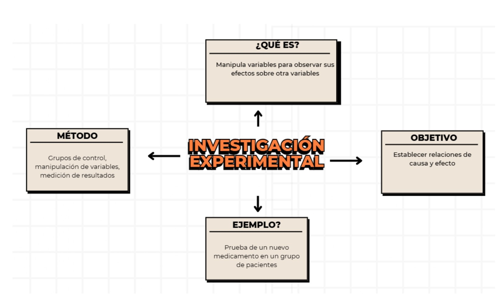

INVESTIGACIÓN CUASI-EXPERIMENTAL
Aunque el nombre sea algo lógico, este tipo de investigación es un intermediario entre la investigación experimental y no experimental. A continuación sabremos el por qué.
¿Qué es la investigación cuasi experimental?
La investigación cuasi-experimental es un tipo de estudio en el que se manipula una variable independiente para analizar su
efecto sobre otra variable, pero sin asignar aleatoriamente a los participantes a los grupos. Es decir, el investigador
interviene, pero no tiene control total sobre todas las condiciones como en un experimento puro.
Se utiliza mucho en contextos educativos, sociales y de salud, donde no es posible seleccionar al azar a los sujetos porque
ya están organizados en grupos existentes (como una clase escolar, por ejemplo).
Importancia
1. Permite realizar estudios prácticos en contextos reales sin perder validez.
2. Es ideal cuando no es ético ni viable hacer asignación aleatoria (por ejemplo, en escuelas u hospitales).
3. Ayuda a evaluar la eficacia de programas o intervenciones.
4. Ofrece evidencia útil para mejorar políticas públicas y procesos sociales.
Ejemplo
Analizar cómo afecta una campaña de salud a una comunidad específica, en comparación con otra que no la recibió.
Este ejemplo representa una investigación cuasi-experimental porque se aplica una intervención (una campaña de salud) en una comunidad específica sin asignación aleatoria. Luego, se compara con otra comunidad similar que no recibió la intervención, para observar diferencias en conocimientos, comportamientos o resultados de salud. Aunque no hay control total de las variables, este tipo de estudio permite evaluar la efectividad de programas reales en contextos naturales.
¿Tienes alguna duda sobre este tipo de investigación?
No te preocupes, te dejamos el siguiente mapa conceptual el cual explica a detalle y de manera resumida lo que trata este tipo de investigación:
Para que todo quede más claro, te dejamos el siguiente video explicativo:
Esperamos que con el siguiente video puedas resolver tus dudas y te quede más claro este tipo de investigación.